MORAT
Grupo Musical
Morat es una agrupación musical de folk pop de Bogotá, Colombia, creada el 13 de diciembre del 2011. Dandose a conocer hasta el año 2015 con su éxito "Mi nuevo vicio" en el cual cantaron junto a la reconocida cantante Paulina Rubio.
